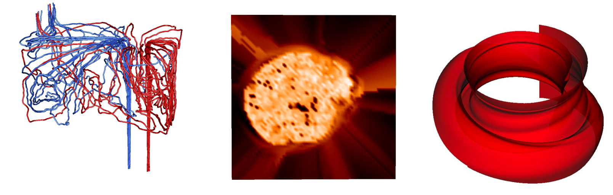

|
|
Parallel Flow Visualization

Problem Overview
Particle advection, i.e., displacing
particles so that they are tangent to the velocity field,
is a foundational element for many visualization algorithms
for flow analysis, including streamlines, pathlines, stream surfaces, and
Finite-Time Lyapunov Exponents (FTLE) calculation.
Particle advection is a particularly difficult form of a non-embarrassingly
parallel algorithm, as the work needed to complete the problem is
data dependent and thus not known a priori.
Further, the workload across particle advection problems can change
dramatically.
For example, streamline calculation typically involves advecting few particles
for long
distances, while FTLE calculation typically involves advecting many particles
for short distances.
Therefore, research on this problem should examine a range of scenarios,
considering variation in
particle count, distance traveled, and vector field.
Finally, visualization and analysis is increasingly being performed in an in
situ setting, where visualization and
analysis is performed at the same time as the simulation, and using some of
its resources.
This usage modality increases the need for understanding
particle advection over many architectures, and at many concurrencies.
Results
We have published multiple papers on this topic.
Highlights include:
- Exploration-oriented usage from interpolating over
Lagrangian tracer particles extracted in situ
can be faster, more accurate, and take less storage than the traditional
post hoc model where time slices are saved to disk (Agranovsky/LDAV14).
- Parallelism approaches between parallelize-over-data and parallelize-over-seeds
may be better than the commonly used approaches at the two ends of the spectrum (Pugmire/SC09).
- Hybrid parallelism
can benefit flow visualization problems significantly, including speedups
of more than 10X on nodes with only four cores (Camp/TVCG11).
- The ability of an architecture to operate efficiently is
dependent on the particle advection workload (Childs/HiPC14, Camp/EGPGV13).
- SSDs on supercomputers can be used to accelerate some particle advection approaches, specifically those that load data repeatedly (Camp/LDAV11).
People
External Collaborators
Publications
A Survey of Seed Placement and Streamline Selection Techniques
Sudhanshu Sane,
Roxana Bujack,
Christoph Garth,
and Hank Childs
Computer Graphics Forum (EuroVis State-of-the-Art Report), Norrkoping, Sweden, May 2020
[PDF] [BIB]
|
A Lifeline-Based Approach for Work Requesting and Parallel Particle Advection
Roba Binyahib,
David Pugmire, Boyana Norris,
and Hank Childs
IEEE Symposium on Large Data Analysis and Visualization (LDAV), Vancouver, Canada, October 2019
Best Paper Honorable Mention
[PDF] [BIB]
|
An Interpolation Scheme for VDVP Lagrangian Basis Flows
Sudhanshu Sane,
Hank Childs,
and Roxana Bujack
Eurographics Symposium on Parallel Graphics and Visualization (EGPGV), Porto, Portugal, June 2019
[PDF] [BIB]
|
Revisiting the Evaluation of In Situ Lagrangian Analysis
Sudhanshu Sane,
Roxana Bujack,
and Hank Childs
Eurographics Symposium on Parallel Graphics and Visualization (EGPGV), Brno, Czech Republic, June 2018
[PDF] [BIB]
|
Performance-Portable Particle Advection with VTK-m
David Pugmire,
Abhishek Yenpure,
Mark Kim,
James Kress,
Robert Maynard,
Hank Childs,
and Bernd Hentschel
Eurographics Symposium on Parallel Graphics and Visualization (EGPGV), Brno, Czech Republic, June 2018
[PDF] [BIB]
|
Spatiotemporal Wavelet Compression for Visualization of Scientific Simulation Data
Samuel Li,
Sudhanshu Sane,
Leigh Orf,
Pablo Mininni,
John Clyne,
and Hank Childs
IEEE Cluster Conference, Honolulu, HI, September 2017
[PDF] [BIB]
|
Accelerating Advection Via Approximate Block Exterior Flow Maps
Ryan Bleile,
Linda Sugiyama,
Christoph Garth,
and
Hank Childs
SPIE Visualization and Data Analysis (VDA), San Francisco, CA, February 2017
[PDF] [BIB]
|
Subsampling-Based Compression and Flow Visualization
Alexy Agranovsky, David Camp, Kenneth I. Joy, and Hank Childs
SPIE Visualization and Data Analysis (VDA), San Francisco, CA, February 2015
[PDF] [BIB]
|
Improved Post Hoc Flow Analysis Via Lagrangian Representations
Alexy Agranovsky, David Camp, Christoph Garth, Wes Bethel, Kenneth I. Joy, and Hank Childs
IEEE Large Data Analysis and Visualization (LDAV), Paris, France, November 2014
Best Paper
[PDF] [BIB]
|
Scalable Computation of Streamlines on Very Large Datasets
David Pugmire,
Hank Childs,
Christoph Garth,
Sean Ahern, and
Gunther Weber
ACM/IEEE Conference on High Performance Computing (SC09), Portland, OR, November 2009
[PDF] [BIB]
|
Streamline Integration Using MPI-Hybrid Parallelism on a Large Multicore Architecture
David Camp,
Christoph Garth,
Hank Childs,
David Pugmire, and
Kenneth I. Joy
IEEE Transactions on Visualization and Computer Graphics (TVCG), November 2011
[PDF] [BIB]
|
Particle Advection Performance Over Varied Architectures and Workloads
Hank Childs, Scott Biersdorff, David Poliakoff, David Camp, and Allen D. Malony
IEEE Conference on High Performance Computing, Goa, India, December 2014
[PDF] [BIB]
|
GPU Acceleration of Particle Advection Workloads in a Parallel, Distributed Memory Setting
David Camp,
Hari Krishnan,
David Pugmire,
Christoph Garth,
Ian Johnson,
Wes Bethel,
Kenneth I. Joy, and
Hank Childs
EuroGraphics Symposium on Parallel Graphics and Visualization (EGPGV), Girona, Spain, May 2013
[PDF] [BIB]
|
Evaluating the Benefits of An Extended Memory Hierarchy for Parallel Streamline Algorithms
David Camp,
Hank Childs,
Amit Chourasia,
Christoph Garth, and
Kenneth I. Joy
IEEE Large Data Visualization and Analysis (LDAV), Providence, RI, October 2011
[PDF] [BIB]
|
Parallel Stream Surface Computation for Large Data Sets
David Camp,
Hank Childs,
Christoph Garth,
David Pugmire,
and
Kenneth I. Joy
IEEE Large Data Analysis and Visualization (LDAV), Seattle, WA, October 2012
[PDF] [BIB]
|
Subsampling-Based Compression and Flow Visualization
Alexy Agranovsky, David Camp, Kenneth I. Joy, and Hank Childs
SPIE Visualization and Data Analysis (VDA), San Francisco, CA, February 2015
[PDF] [BIB]
|
|